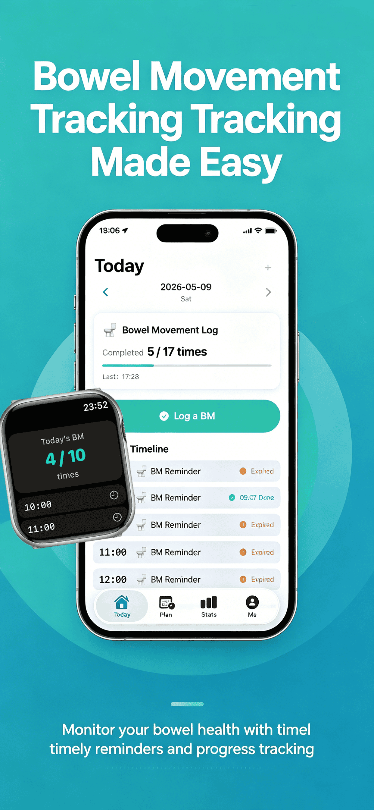
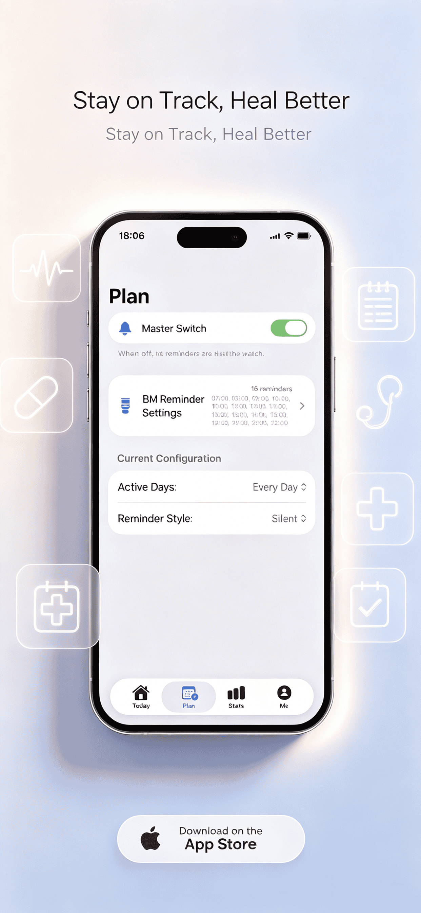
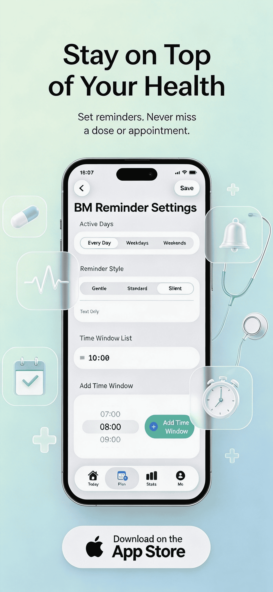
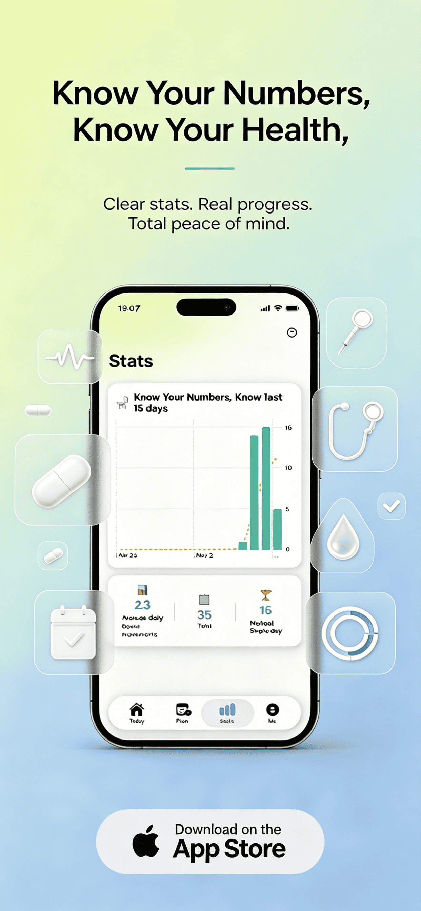
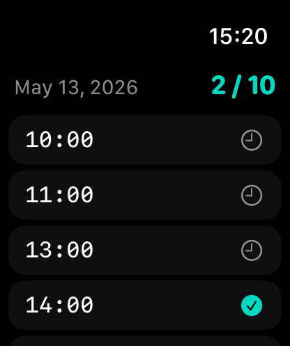
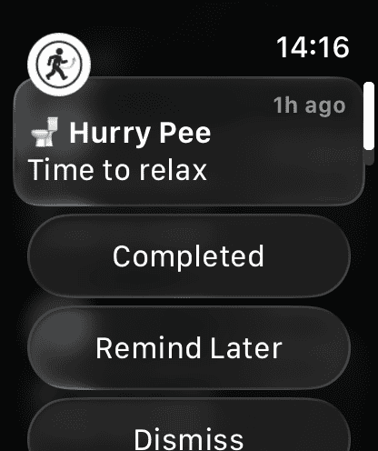
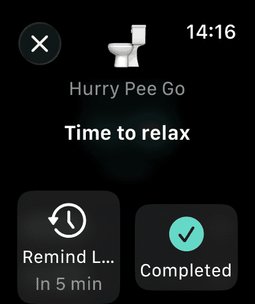

📅
Personalized slots
Set times on iPhone (e.g. 08:00, 13:00, 16:00)
🔔
Three alert modes
Gentle · Standard · Silent
⌚️
One-tap on Watch
“Done” or “Remind me later (5 min)”
📊
Track progress
Daily history & 30‑day chart
❤️
Apple Health sync
Seamless integration
🌎
6 Languages
EN, FR, DE, JP, SV, plus more
iPhone Experience
Set your schedule, review insights and stay consistent

⏱️ Set time slots

🔕 Gentle or Silent

📈 30‑day chart

🩺 Apple Health sync
Apple Watch Companion
Discrete, intuitive, and right on your wrist

📳 Soft tap reminder

✅ One‑tap “Done” / Later

📅 Daily glance
- ✓ Set personalized time slots directly on iPhone (08:00, 13:00, 16:00, or
any custom times)
- ✓ Three alert types: Gentle, Standard,
or Silent — non-intrusive by design
- ✓ Apple Watch actions: tap “Done” to log success or “Remind me later (5
min)” for flexible pacing
- ✓ Daily progress view, complete history log, and interactive 30‑day chart
to spot patterns
- ✓ Syncs with Apple Health – contributes to mindful
wellness tracking
- ✓ Supports English, French, German, Japanese, Swedish (more languages
coming)
- ✓ Perfect for office workers, seniors, travelers, or anyone seeking
better digestive health without interruption
🌿 EasyCalc encourages regularity, reduces urgency anxiety, and helps you build sustainable bowel & bladder
habits. No loud alarms, no embarrassment — just a gentle nudge when you need it.
💼
Office workers
Stay on track during meetings
🧓
Seniors
Gentle routine support
🧘
Wellness seekers
Better digestive health
💡 Support
& Tips
⌚️ How do I enable Apple Watch notifications?
After installing EasyCalc on iPhone, open the Watch app
→ Notifications → EasyCalc → Mirror iPhone alerts. Ensure “Haptic” is turned on for the soft tap
experience.
📊 Where can I view my 30‑day chart?
Open the “Progress” tab on iPhone — see your completion
rate, trends, and calendar view. Data syncs securely across devices.
🔇 What does “Silent” alert do?
Silent mode means no sound, only a haptic tap on your
Apple Watch (if enabled) or a subtle banner on iPhone. Perfect for meetings or quiet
environments.
🔄 Does EasyCalc write data to Apple Health?
Yes. With your permission, EasyCalc logs mindful routine
events that contribute to your overall health profile. You’re always in control.